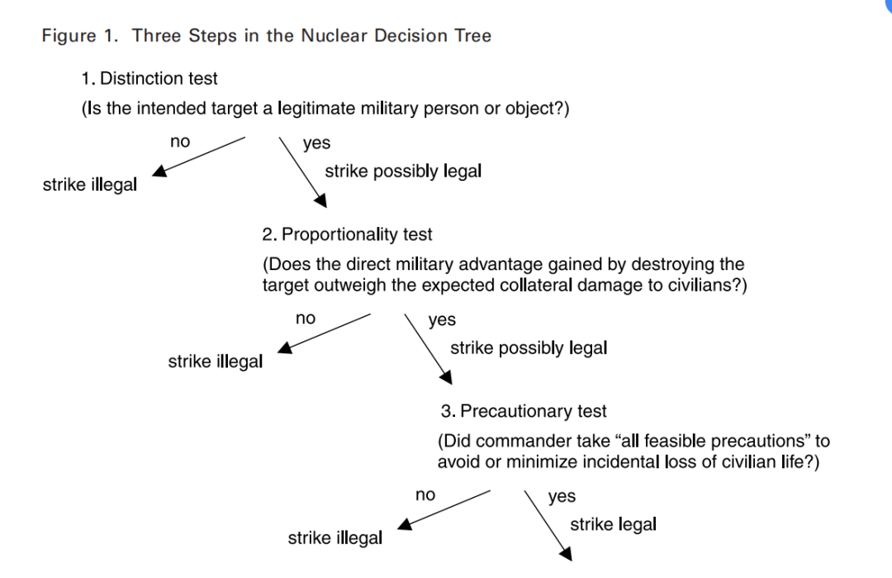

收录于合集

作品简介
【作者】 斯科特·萨根，斯坦福大学国际安全与合作中心政治学教授；
艾伦·韦纳，斯坦福大学法学院高级讲师、国际与比较法项目主任。
【编译】 朱晓洁（中国人民大学国际关系学院硕士研究生）
【校对】 肖龙
【审核】 廖泽玉
【排版】 黄晨蕊
【美编 】杜丛竹
【来源】 Scott D. Sagan, Allen S. Weiner, The Rule of Law and the Role of Strategy in U.S. Nuclear Doctrine, International Security , Vol.45, Issue4, 2021, pp.126-166.
【归档】 《国际关系前沿》2021年第6期，总第33期。
期刊简介
《国际安全》( International Security ) 是经过国际和国家安全领域同行评议的顶级学术期刊，其刊发的论文主题广泛，涵盖战争与和平等传统安全问题与环境、人口、人道主义、恐怖主义等新的安全议题。它创刊于1976年，由哈佛大学贝尔弗科学与国际事务中心(Belfer Center for Science and International Affairs at Harvard University)编辑，麻省理工学院出版社(MIT Press)出版，每年四期。根据Journal Citation Reports显示，该杂志2019年影响因子为5.432。
**美国核原则中的法治与战略
**
The Rule of Law and the Role of Strategy in U.S. Nuclear Doctrine
斯科特·萨根
艾伦·韦纳
内容提要
冷战期间，美国的核战略主要有两个任务：第一，通过威胁首先使用核武器来吓阻（deter）对欧洲或亚洲盟友的大规模传统攻击；第二，利用核报复的威胁来吓阻核攻击。冷战后，美国的核战略依旧保留了上述两项任务，但是三项重要事态的发展从根本上挑战了美国的核战略。第一，核武器向更多国家扩散以及其他大规模杀伤性武器——包括化学、生物和网络武器——产生新的、多样的战略威胁。第二，导弹导航技术的“精准度革命”（accuracy revolution）使美国，或者未来的其他国家，能够比冷战时更精准地投放核弹头与传统武器弹头。与此同时，伴随着“精准度革命”的是“低当量革命”（low- yield revolution），使美国可以发展非常小型的战术核武器弹头，包括灵活的“威力可调”（dial-a- yield）武器。第三个发展是美国政府未经资格授权的的声明，武装冲突法（the law of armed conflict, LOAC）——包括区别、比例和预防的原则——适用于关于核武器使用的所有计划和决定。
这三项变化相互作用，为美国理念提出了新的挑战：如何最佳地吓阻并且回应针对美国或其盟友的一次有限的的核攻击或者重大的非核攻击，如果必要的话，同时遵守武装冲突法令。
本文由一位政治学学者与一位国际法律师共同完成，试图建立两个学术共同体之间的学术交流，为安全研究和法律研究做出贡献。本文分析了武装冲突法是如何适用于美国的核战略思想和战争计划的。本文也阐明了战略计算被如何应用于评估任何核武器的潜在使用的合法性上。本文分为五个部分，第一，描述了国际法的来源，阐述了哪些法律原则适用于美国核武器声明，并且解释了为什么这些原则是重要的。本部分同时列出了武器冲突法的三个主要使用原则——区别原则、比例原则和预防原则，以及交战报复原则。第二，本文讨论了关于核武器的战略研究文献和法律文献如何被分离为两种不同的学科区域，从而导致了两个学术共同体的不完全的和经常是具有误导性研究。第三，本文展示了如何在美国核目标以及潜在用途上合理地使用武装冲突法原则。第四，本文阐明了针对瞄准平民作为报复手段的禁令已经获得国际习惯法的地位，并且驳倒美国在“持久反对者”原则下不受该禁令约束的观点。第五，作者们讨论了本研究的政策影响。
文章导读
01
武装冲突法的影响、 来源和原则
怀疑者认为，将武装冲突法适用于核问题是纯粹的学术练习。然而，将法律适用于军事行动的证据是有力的。法律会影响传统军事行动，并且美国军方也接受并遵守武装冲突法。在美国内战中由33名法官组成的总检察官团现在已经成长成为拥有一万名左右成员的强大的律师团体，使其成为地球上最大的法律团队。所有的核战争计划现在要由美国战略司令部的检察官团队正式审查，这一过程源于美国军方高层数十年来对于改善并应用武装冲突法于军事行动上的不断努力。更重要的是，拒绝执行违反战争法的命令是美国军事人员的法定义务，这其中包括执行核打击的命令，这持续鼓励了合法的战争计划的做出。例如，美国战略司令部的指挥官提到它们有责任不遵从非法的命令，即使它由总统下达。
本文不认为美国的军事律师或者他们的民间合作者总是能够正确地解释武装冲突法，本文的核心目的是辨认出他们哪里解释的正确，哪里不正确，本文也并不认为美国总会遵守武装冲突法。
条约和国际习惯法
条约和国际习惯法是国际法的两个主要来源。条约是国家之间的双边或多边书面协定，为参与者设定了权利和义务。与之相反，国际习惯法是基于国家间实践逐步发展起来的。如果国家实践足够广泛，国际习惯法可以约束所有国家，即使一些国家没有参与这种实践。条约只为参与协定的人设立权利和义务。然而，当这种协定被国家普遍遵守，并事实上接受，条约可能导致国际习惯法的产生。
武装冲突法的关键原则
美国有义务遵循源自国际法的武装冲突法的基本原则。这些原则在武装冲突法的第一议定书（Protocol I）中被设立。他们被广泛接受为已有的国际习惯法，因此可以约束所有参与或没有参与该协议的国家。尽管美国政府在第一议定书谈判期间，坚持该条约不适用于核武器，后来它在1978年明确表示，第一议定书中的区别原则、比例原则和预防性原则是具有普遍约束力的国际习惯法，适用于美国所有的军事行动。
“区别原则”意味着“平民群体和平民个人不能成为攻击的目标”。“平民设施”也不能成为攻击的目标。关于无差别攻击的相关禁令适用于如下攻击：不直接针对特定的军事目标任务；使用的战斗方式和工具不能直接针对特定的军事目标；具有不区分打击军事目标和平民或平民目标性质的攻击。
“对等原则”意味着限制双方平民伤亡，且禁止根据第一议定书补充规定中那种攻击，即“预期……平民生命意外损失、平民受伤、平民物品损坏或其组合……对取得预期的具体和直接军事优势来说是过度的”所规定的攻击。
“预防原则”意味着在选择攻击的手段和方式时，武装力量必须“进行所有切实可行的预防措施……来避免，并且在任何情况下来减少平民生命的意外损失、平民的受伤和对平民目标的损坏。”
最后，“交战报复原则”意味着“一个行为在其他情况下都是非法的，在国际法之下只有当被用作对敌人的非法行为反应时的强制措施，一个行为才被认为是合法的”。通过禁止报复行为攻击平民，第一议定书限制了相互报复的允许范围。
核领域的国际法
在数量有限的拥核国来看，问题是国际法——尤其是国际习惯法——如何在核领域适用。在明确禁止使用核武器与如何允许使用核武器的规则之间存在着关键的差异。禁止使用某一种特定类别的武器需要特定的法律规则。国家可以通过条约接受对使用某种特定类别武器的限制，并且这种分类限制可以随时间演变成约束不参加条约的国家的习惯法。但是作为一种普遍原则，国家可以解释他们对带有国际习惯法性质的对某一特定类型武器的新兴禁令的反对，并且只要这种抵触行为被持续付诸实践，他们将不接受禁令的支配。
作为一个团体，拥核国家依靠这些关于制定国际法禁止武器类型反对使用核武器的原则，反对将绝对禁止使用核武器作为国际习惯法。例如，美国连同法国、英国，一直投票反对联合国大会关于“禁止使用核武器公约”的多边决议，该公约声明“任何使用核武器的行为都是违反联合国宪章的，并且是对人类的犯罪行为”。在2018年10月，在联合国大会多数成员通过了禁止使用核武器公约之后，美国、中国、法国、俄罗斯和英国发表了一个联合声明，清楚地表示条约对使用核武器的类别性禁令不会成为国际习惯法，并且它们会不停地反对这一禁令。印度政府也发表了类似的声明，“条约不会构成任何国际习惯法”。
然而，这些主张都不适用于关于如何使用这些武器的国际法规则。武装冲突法的国际习惯法，包括区别、对等和预防原则，适用于任何武器体系的使用。在一种新武器发明之后，无论是否安全地断定平民不会成为直接目标，上述原则都将适用。并且，拥核国也批判性地接受了武装冲突惯例法适用于核武器的使用。
02
战略研究和法律研究的分野
研究核问题的学术团体没能以全面和综合的方式解决战略和法律问题。在冷战期间，关于核战略的法律原则运用的讨论明显缺失。例如，在托马斯·谢林、保罗·布拉肯、罗伯特·杰维斯、斯科特·萨根的研究中都没有关于武装冲突法的讨论。这是可以理解的，因为美国的冷战核战略与武装冲突法的基本原则是不可调和的。尽管当前美国核战略声称遵循武装冲突法，大部分战略研究学者却继续忽视法律限制。即使关注限制美国的核选择的学者也误解了武装冲突法的限制。
在讨论核武器使用的国际法律师几乎不关注战略考虑。或者关于核武器可能使用的背景或现代核武器的作战特征的问题。任何核武器的使用是必然是不成比例以及无差别的假设出现了，例如，在2017年《禁止核武器条约》的序言中指出，“任何使用核武器都将违反……国际人道主义法的原则和规则”。关于使用核武器必然和绝对违反国际人道主义法原则的假设也贯穿于法律学术文学和民间社会话语中。并不是所有分析核目标的法律学者都忽视了低当量核武器的存在，但他们仍然倾向于得出结论，即不存在使用核武器而不违反武装冲突法的情形。他们以低当量核武器也会有放射性沉降物污染，会有潜在的长期性环境影响为理由，认为任何程度的核武器的使用都是违法的。
03
美国核原则中 武装冲突法的运用
如果美国核原则要真的符合武装冲突法，在什么情况下，美国对敌人的和核攻击或大规模非核战略攻击的核报复是合法的？这取决于以下三个个具体问题的回答：第一，针对的目标是合法的军事目标还是非法的平民目标；第二，由攻击造成的平民损伤是否与直接的军事优势是对等的；第三，美国是否采取了所有可能的措施减少平民伤亡。此外还有两个问题：第一，是否有合理的机会，战争可以通过限制性的回应恢复相互威慑来结束；第二，是否有可能在反击中摧毁敌人的大部分的核力量。

区别原则的运用
在立法时，立法者面临着“规则”（rule）和“标准”（standard）的选择。“规则”是清楚的、容易运用的，并为执行这些措施的人提供了高度的可预测性，但仅有有限的自由裁量权。相反的是，“标准”更普遍，并允许在应用中考虑到更广泛的因素。即使更像“规则”的武装冲突发动法的原则——禁止瞄准平民和平民设施，仍然需要判断谁是平民，哪些具体的工业设施是军事目标。
对个人来说，第一议定书的补充协定将“平民”定义为除战斗人员以外的所有人。只有战斗人员，或者在敌对行动中直接参与的平民，才可能被瞄准。为了运用这些规则，《国防部战争法手册》采用了一种功能性的和扩展的方法：指挥和控制武装部队的非战斗人员，诸如国家领导人、文官和政治领袖，都可能成为攻击的目标……除了在作战指挥链中发挥作用的领导人，直接参与敌对行动的领导人也可能成为攻击的目标。计划或者授权作战行动属于直接参与敌对行动。不属于作战指挥链或在作战指挥链中不起直接作用的政治或公务人员不属于合法的目标。
比例原则的运用
武装冲突法的第二个要求是禁止不成比例的攻击。运用这一原则的挑战是如何平衡两个因素：军事优势与平民损伤。这一挑战不仅仅是针对核武器的潜在使用的，而是在评判任何军事攻击中都存在。
学者们简单的假设任何核攻击都将是不成比例的，因为产生大规模附带的平民伤亡已经无法平衡比例原则的两个要素了。但是由于美国的减少了放射性沉降物的低当量核武器，以及得以被拯救的众多美国或盟友的平民的生命（这也是美国运用核武器先发制人可以取得的最直接军事优势），这一平衡将可能达到。
预防性原则的运用
即使在美国有能力摧毁敌人发射核武器的能力，且如此的核攻击可能是成比例的情况下，美国战略家仍需评估想得到的军事优势（阻止敌人的核攻击）是否能够合理地用更限制性的回应方式来实现。如果可以，那么预防性原则将要求美国选择更限制性的回应方式。
除此之外，预防性原则还内含美国政府需要平衡摧毁合法的目标与减少意外的平民伤亡的要求。如果没有这一要求，一个保守的军事计划者将总是选择更大、更具有破坏力的武器来最大化摧毁目标的可能。现在，可行的预防措施的要求意味着决定需要在使用核武器还是传统武器之间做出。
因此，预防原则是美国使用核武器的重要限制，即使当比例原则可能允许使用核武器时。但是需强调的是，军事指挥官必须基于军火库中可获得的武器来做出关于预防原则的合法的决定。如果没有足够数量的传统武器或者低当量武器，那么预防原则的约束力将很小。
04
拒绝对非战斗人员的报复行动
美国官员明确地宣称美国的核政策遵守了武装冲突法是否意味着不仅任何核武器的使用都必须遵守区别、比例和预防原则，并且即使在交战双方的报复行动中回应对美国平民的非法攻击时，美国也将不会瞄准平民？
在以下对相互报复的经典理解中，美国对平民目标的核攻击行为不会违反武装冲突法：
第一，如果敌人最初的攻击本身违反了武装冲突法（如攻击平民）；
第二，美国的回应与敌人的非法行动是成比例的；
第三，美国的回应存在吓阻敌人未来攻击的意图。
西奥多·理查德（Theodore Richard）暗示了相互报复原则可能为直接瞄准平民目标提供合法性。
本文认为这些传统的立场已经不能准确的定义该法律，武装冲突法不再允许在相互报复原则下将平民或平民目标作为攻击对象。在第一预定书之后的很多年里，美国拒绝承认在武装报复中关于瞄准平民的禁令的国际习惯法地位。尽管本文对任何潜在的相互报复形式的问题不采取分类立场，但国家的实践和相关的法律义务解释都支持了作者的立场，即以报复的形式将平民作为核武器或其他武器攻击的目标不再是合法的。
因为不是第一协定的签约国，美国当然不受第五十一条中禁止在报复行动中攻击平民的限制。但是，美国可能处于政治或人道主义的原因，决定在一些特定情况下不开展包括非己方平民的报复行动。
在近几十年中，保留在报复行动中攻击平民这项权利的国家在减少。国家实践确实对在国际习惯法之下依旧允许针对平民的报复行动提供了很少的支持。一些评论者持相反的观点，指出一些国家确实进行了这种对平民的报复。但是单独的实践不足以说明针对的平民的报复行动证实是合法的。
在法律义务感影响下，囊括了常见国家做法的当代记录表明，禁止针对平民的交战报复做法已发展成为一项具有约束力的惯例国际法规则。尽管美国在1995年在它给国际法院的书面文件中坚称，附加协定一的第五十一条对平民报复的禁令是一项新的规则，并非国际习惯法，但是美国政府并没有连续的25年时间里持续反对的记录。美国核目标指导方针也明确指出美国不会故意瞄准平民或平民目标，并且没有排除相互报复行为例外情况。
虽然国际上并没有既定公式规定一个规则反对者应该多持久地对某一新兴规则进行反对，但在这一情况下，大多数国家显然支持了禁止在相互报复行动中攻击平民的禁令。即使美国政府在未来要不恰当地宣称它持续地反对这一禁令，美国核政策指导中的陈述也是遵守这一禁令的。
在核领域关于相互报复原则的辩论并不是真的关于法律的，它是关于消除美国是否遵守这一法律的歧义的战略后果的。本文认为美国政府应当正式宣布放弃任何针对平民的攻击。
05
结论
本文已经阐明了在美国核声明中合理运用武装冲突法要同时理解相关的法律原则和战略情景。法律逻辑和战略的计算对政策实施非常重要。2018年核态势审查报告中的某些因素与本文的分析相符，另一些则不相符。一些战略家假设如果美国正式地承诺严格遵守武装冲突法，敌人将更可能发动对美国或盟友城市的非法袭击。本文认为这种假设不成立，原因如下：威慑的有效性是基于对手对实施威胁的可能性和该反应的成本的估计；如果五角大楼对严格合法的军事和领导目标实施核或常规报复，也没有人应该低估对美国发动核打击的极端的代价；美国的敌人将无法确定其领导人，就算是承诺遵守法律，在美国或其盟友遭到核武器的攻击时，是否真的会这样做；值得记住的是，美国的战略家们以前就曾这样做过。
文章观点不代表本平台观点，本平台评译分享的文章均出于专业学习之用, 不以任何盈利为目的，内容主要呈现对原文的介绍，原文内容请通过各高校购买的数据库自行下载。
好好学习，天天“在看”
国政学人
支持学术公益与知识传播
微信扫一扫赞赏作者 __赞赏
已喜欢，对作者说句悄悄话
取消 __
发送给作者
发送
最多40字，当前共字
上一页 1/3 下一页
长按二维码向我转账
支持学术公益与知识传播
受苹果公司新规定影响，微信 iOS 版的赞赏功能被关闭，可通过二维码转账支持公众号。